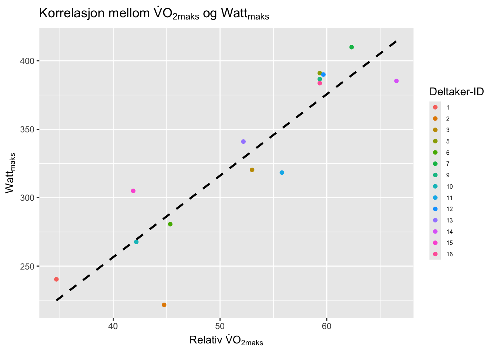

Code
library(readxl)
library(tidyverse)
library(ggplot2)
library(dplyr)
library(magrittr)
library(gt)
library(ggtext)
df <- read_xlsx("data/o2-test.xlsx")Reliabilitet er en utrolig viktig faktor innenfor fysiologisk testing. Hvis man ønsker å følge utviklingen til en utøver over en lenger periode er det viktig at testen vi benytter oss av, og utstyret som brukes i testen måler tilnærmet likt hver gang. Hvis testene som blir brukt har høy reliabilitet kan utøvere og trenere stole på at forskjellene i resultater mellom ulike tester skyldes endringer i fysiologiske faktorer og at det ikke er feilmålinger som gir utslag.
For å i ettertid kunne evaluere effekten av en treningsplan, intervensjon eller periode må man kunne stole på testene som blir gjennomført. Dersom testene som blir benyttet har lav reliabilitet, kan det være vanskelig å skille mellom virkelige prestasjonsforbedringer og tilfeldige variasjoner som skyldes unøyaktighet i målingene. Dette kan resultere i at man endrer et godt fungerende treningsopplegg, eller at man fortsetter med et dårlig fungerende treningsopplegg.
I idrettsvitenskapen forskes det gjerne på effekt av ulike intervensjoner. Uavhengig av om det gjøres forskning på utrente eller elite-utøvere er det viktig at målingene har høy reliabilitet. Dette med bakgrunn i at vi vil levere god kvalitet i forskningen og at det skal være litteratur man skal kunne stole på.
Det ble gjennomført fire testdager 28.08.2024, 29.08.2024, 9.09.2024 og 11.09.2024 for å teste \(\dot{V}O_{2maks}\). Formålet med disse testene var å øve på å kunne gjennomføre fysiologiske tester med høy reliabilitet. Reliabilitet refererer til graden av konsistens eller pålitelighet i målinger evnen til å kunne reprodusere (Hopkins 2000), et eksempel på dette er ved fysiologisk testing som repeteres i forskningsprosjekter, der bedre reliabilitet vil indikere hvor god presisjonen er og måling av endring over tid (Hopkins 2000). Det er mange begreper som er relevante for å kunne si noe om reliabilitet, men standardavviket er et av disse. Standardavviket sier noe om hvor langt unna verdiens gjennomsnittlige avstand er fra gjennomsnittet (Spiegelhalter 2020)
Kroppens maksimale oksygenopptak (\(\dot{V}O_{2maks}\)) sier noe om kroppens maksimale evne til å ta opp og omsette oksygen (Bassett and Howley 2000). \(\dot{V}O_{2maks}\) kan beskrives ved hjelp av Ficks likning: \(\dot{V}O_{2maks}\)=MVmaks x a-vO2differansemaks. \(\dot{V}O_{2maks}\) måles ved at man måler hvor mye oksygen kroppen klarer å omsette pr minutt (Bassett and Howley 2000). Det finnes ulike måter og fremstille \(\dot{V}O_{2maks}\) på, de to av disse er absolutt \(\dot{V}O_{2maks}\) beskrevet som (ml ×min-1) eller relative tall relatert til kroppsvekt (ml/kg/min).
I resultatdelen har vi valgt å bruke relativ \(\dot{V}O_{2maks}\) for å beregne reliabiliteten til testene vi har gjennomført. Vi har også valgt å se på sammenhengen mellom relativ \(\dot{V}O_{2maks}\) og wattmaks under \(\dot{V}O_{2maks}\)-testen. Forskning viser at høy \(\dot{V}O_{2maks}\), sammen med god mekanisk effektivitet og høy laktatterskel gir bedre utholdenhetsprestasjoner, noe som reflekteres i høyere Wmaks/kg (Joyner and Coyle 2008)
VO2maks testen ble gjennomført på en ergometersykkel med bukkestyre (Lode Excalibur Sport; Lode B.V., Groningen, Nederland). Kranken kalibreres på Lode sykkelen før hver teststart, og sykkel stilles inn etter utøver sitt ønske ved første test og stilles inn til den samme sittestillingen påfølgende tester. For å måle det maksimale oksygenopptaket ble det brukt Vyntus (Jaeger Vyntus CPX, Hoechberg, Tyskland). Gassanalysator kalibreres til < 2,0% differanse og luftvolum kalibreres til < 0,2% differanse. Zeroing gjøres også alltid før test starter. Syklistene veies med de klærne de skal sykle med, og 0,3kg trekkes fra. For å kunne sikre god relabilitet ble det tydeliggjort at man skulle replisere det siste måltidet før test, ha det samme koffeininntaket, avstå fra alkohol og tobakk de siste 72 timene før test og prøve å få tilnærmet lik søvn, samt trene det samme dagen før test. Da dette er faktorer som kan spille inn på prestasjon og metabolismen (Tanner and Gore (2012)) og dermed påvirke relabiliteten. Hvorvidt dette er fulgt er noe usikkert da dette ikke er fulgt opp videre annet enn at det ble informert om før første testdag.
VO2maks testen gjennomføres etter en 5min standardisert oppvarming på ergometersykkelen. Oppvarmingen starter med en 2 min oppvarming på 11-12 i Borg, deretter 2min på 15 i Borg før 1min på 11-12 BORG. Testen starter på en belastning (Watt) basert på deltagerens nivå i samråd med utøver og testleder. Det viktigste er at påfølgende VO2maks tester starter på samme watt. Wattbelastningen økte med 20W eller 25W hvert minutt frem til utøveren når maksimal utmattelse er oppnådd. Maksimal utmattelse ble i denne sammenheng ikke evne til å kunne opprettholde RPM≤ 60. Under VO2maks var RPM valgfritt. Testleder gjør verbal oppmuntring og sekundering underveis i testen. For at verbal oppmuntring og instruksjon ved test skulle være lik etterstreb vi å ha samme testleder til samme test person (Halperin, Pyne, and Martin 2015). Det blir målt oksygenmålinger hvert 30 sek, og de to høyeste påfølgende målingene blir definert som VO2maks. Umiddelbart etter test oppgir utøveren opplevd anstrengelse på BORG skala. Maks hjertefrekvens blir lest av fra utøverens egen pulsklokke. Blodprøve ble tatt fra utøverens fingertupp 1 min etter endt test for å måle [BLa-]. [BLa-] blir videre målt videre målt ved hjelp av en Biosen C-line (Biosen C-line Lactate Analyzer, EKF Diagnostic GmbH, Barleben, Germany) .Etter endt test ble det hentet ut data som videre ble plottet inn i Excel og videre ført statistikk på ved hjelp av Rstudio.
library(readxl)
library(tidyverse)
library(ggplot2)
library(dplyr)
library(magrittr)
library(gt)
library(ggtext)
df <- read_xlsx("data/o2-test.xlsx")Etter at testene er gjennomført kan vi se nærmere på hver forsøkperson sine data. Dette gir muligheten til å se på hver enkelt forsøksperson om man finner dette interessant (Table 1.1). Verdiene man kan se i tabellen, er verdier som er plottet etter endt \(\dot{V}O_{2maks}\)-test.
library(dplyr)
library(tidyr)
library(knitr)
library(kableExtra)
# Generer en tabell med nødvendige beregninger
df.tbl <- df %>%
select(id, timepoint, weight, w.max:borg.max) %>%
select(-hr.max, -la.max, -bf.max, -vco2.max, -rer.max, -ve.max) %>%
mutate(rel.vo2max = vo2.max / weight,
rel.wmax = w.max / weight) %>%
pivot_longer(names_to = "Parameter", values_to = "verdier", cols = w.max:rel.wmax) %>%
group_by(id, Parameter) %>%
summarise(m = mean(verdier, na.rm = TRUE),
s = sd(verdier, na.rm = TRUE)) %>%
mutate(m_s = paste0(signif(m, 3), " (", signif(s, 2), ")")) %>%
ungroup() %>%
select(-m, -s) %>%
pivot_wider(names_from = "id", values_from = "m_s")
# Endre radnavnene ved å bruke mutate() hvis radnavnene er i en kolonne
df.tbl <- df.tbl %>%
mutate(Parameter = case_when(
Parameter == "rel.vo2max" ~ "VO$_{2max}$ (ml/kg/min)",
Parameter == "w.max" ~ "Watt$_{max}$",
Parameter == "borg.max" ~ "Borg$_{max}$",
Parameter == "vo2.max" ~ "VO$_{2max}$ (ml/min)",
Parameter == "rel.wmax" ~ "Watt/kg",
TRUE ~ Parameter # Hvis verdien ikke matches, behold opprinnelig navn
))
# Lag tabellen med kable og kableExtra, med escape = FALSE for å tillate LaTeX-syntaks
df.tbl %>%
kable("latex",
booktabs = TRUE,
escape = FALSE) %>%
kable_styling(
font_size = 6, # Redusert skriftstørrelse for å få mer plass
full_width = FALSE,
position = "center",
latex_options = "H"
) %>%
column_spec(2:ncol(df.tbl), width = "0.5cm") %>% # Juster kolonnebredden for alle kolonner unntatt første
row_spec(0, bold = TRUE) |>
# Gjør header-raden fet
add_footnote(label = "Table 1.1: Tabellen viser hver deltakers gjennomsnitt og standardavvik i () på verdier vi har undersøkt", notation = "none")library(dplyr)
library(gt)
df |>
filter(timepoint == "t1") |>
select(id, vo2.max, w.max, sex) |>
group_by(sex) |>
summarise(o2mean = mean(vo2.max, na.rm = TRUE),
wmean = mean(w.max, na.rm = TRUE),
o2sd = sd(vo2.max, na.rm = TRUE),
wsd = sd(w.max, na.rm = TRUE))o2meanK <- 3163
o2meanM <- 4380
o2sdK <- 484
o2sdM <- 515
wmeanK <- 257
wmeanM <- 352
wsdK <- 31.0
wsdM <- 51.6Etter å ha gjennomført VO2maks-testene ser vi at kvinnene på 1MAIDR har et gjennomsnittlig oksygenopptak på 3163 ± 484. Mennene har derimot et gjennomsnittlig oksygenopptak på 4380 ± 515.
df.rel <- df |>
select(id, timepoint, weight, vo2.max, w.max) |>
mutate(rel.vo2 = vo2.max / weight) |>
mutate(rel.wmax = w.max / weight)df.rel |>
#velger hvilke variabler vi er interessert i å se på
select(id, timepoint, rel.vo2) |>
#benytter oss av pivot_wider for å lage tidy_data
pivot_wider(names_from = timepoint,
values_from = rel.vo2) |>
mutate(diff = t2 - t1) |>
summarise(MEAN = mean(c(t1, t2), na.rm = TRUE),
SD = sd(diff, na.rm = TRUE),
TE = SD / sqrt(2),
CV = TE/MEAN * 100) |>
gt() |>
fmt_number(decimals = 2)df.rel |>
#velger hvilke variabler vi er interessert i å se på
select(id, timepoint, rel.vo2) |>
#benytter oss av pivot_wider for å lage tidy_data
pivot_wider(names_from = timepoint,
values_from = rel.vo2) |>
mutate(diff = t4 - t3) |>
summarise(MEAN = mean(c(t3, t4), na.rm = TRUE),
SD = sd(diff, na.rm = TRUE),
TE = SD / sqrt(2),
CV = TE/MEAN * 100) |>
gt() |>
fmt_number(decimals = 2)Reliabiliteten mellom t1 og t2 er 2.47%, mens reliabiliteten mellom t3 og t4 er 4.78%.
library(dplyr)
library(ggplot2)
library(latex2exp)
df %>%
filter(timepoint == "t1") %>%
mutate(rel.vo2max = vo2.max / weight) %>%
mutate(w.max.kg = w.max / weight) %>%
ggplot(aes(x = rel.vo2max,
y = w.max,
color = as.factor(id))) +
geom_point() +
labs(
x = TeX("Relativ $\\dot{V}O_{2maks}$"),
y = TeX("$\\Watt_{maks}$"),
title = TeX("Korrelasjon mellom $\\dot{V}O_{2maks}$ og $\\Watt_{maks}$"),
color = "Deltaker-ID" # Dette gir navn til legenden
) +
geom_smooth(method = "lm", se = FALSE, color = "black", linetype = "dashed") +
theme(
legend.position = "right",
legend.text = element_text(size = 6),
legend.key.size = unit(0.8, "lines")
)
Basert på de observerte resultatene fra testing av \(\dot{V}O_{2maks}\), kan det konkluderes med at metoden vi har anvendt har høy reliabilitet. Resultatene indikerer at vi måler det ønskede på en pålitelig måte, med minimal variasjon i måleutstyret mellom testene.
Dette gir oss en trygghet i at vi med relativt stor sikkerhet kan evaluere effekten av et treningsprogram ved å gjennomføre gjentatte tester før og etter treningsperioder.